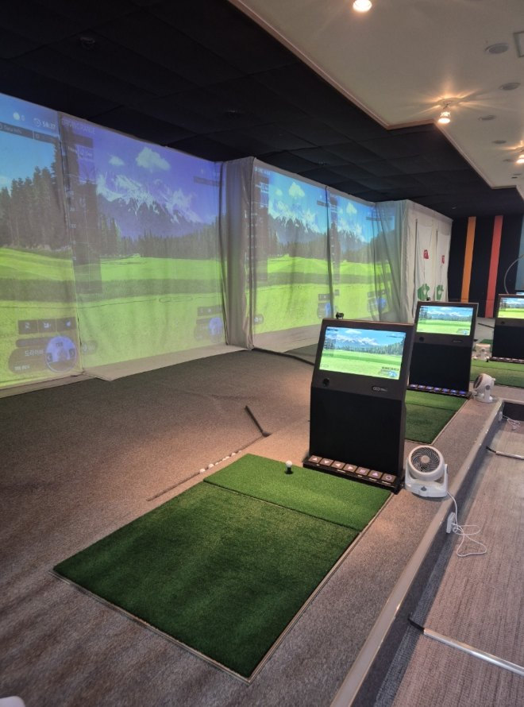
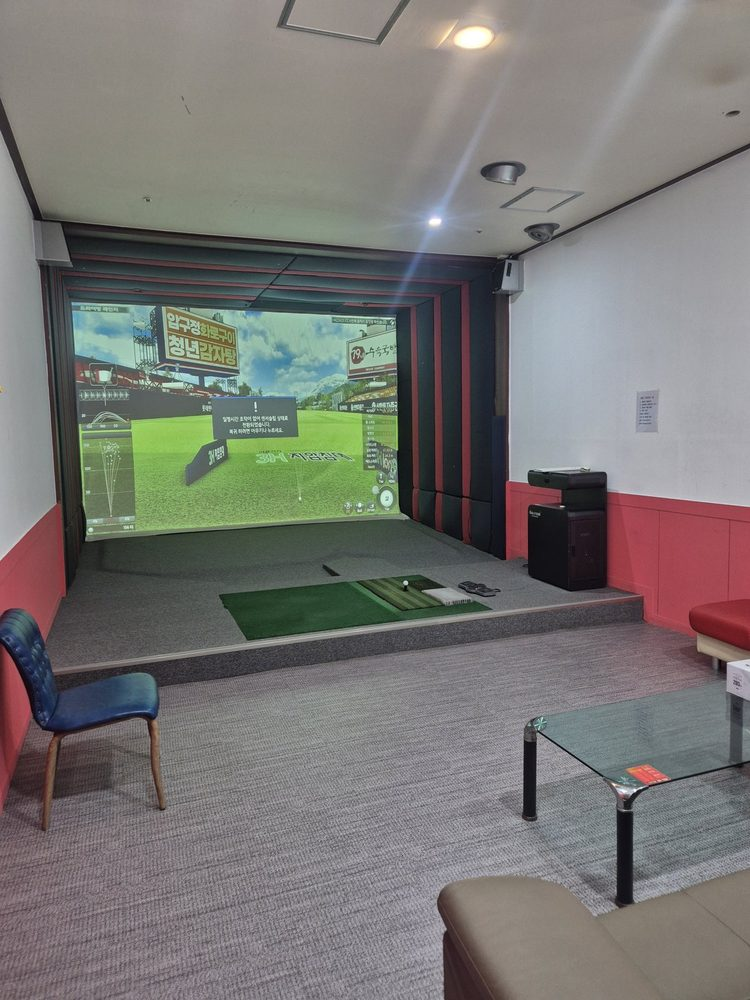
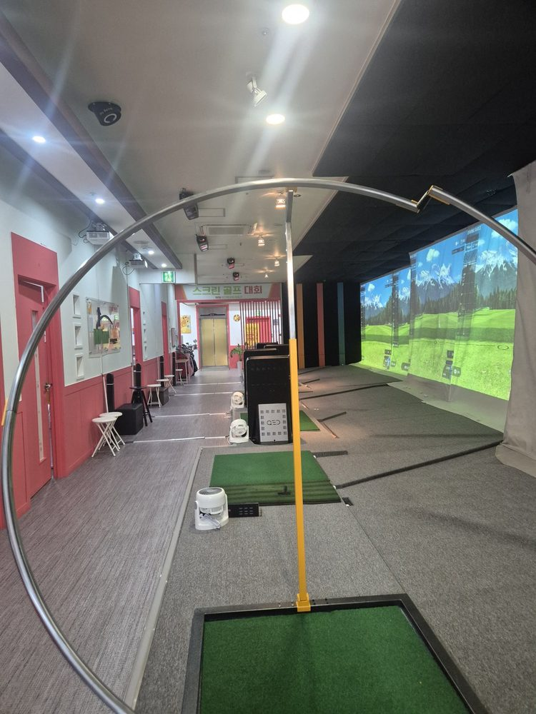
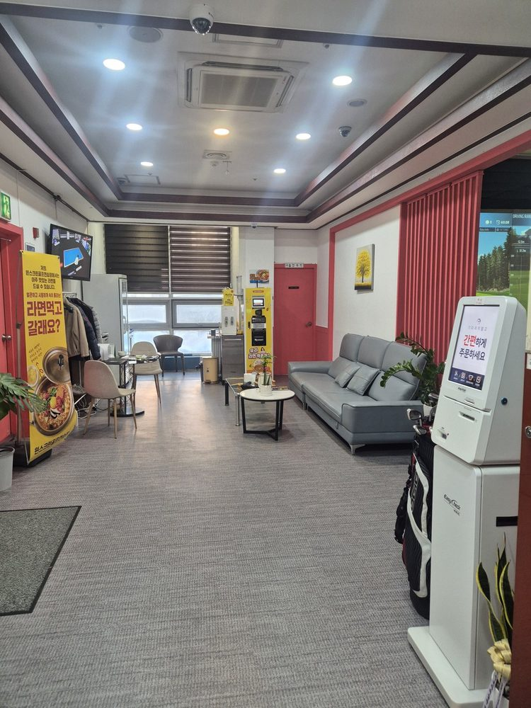
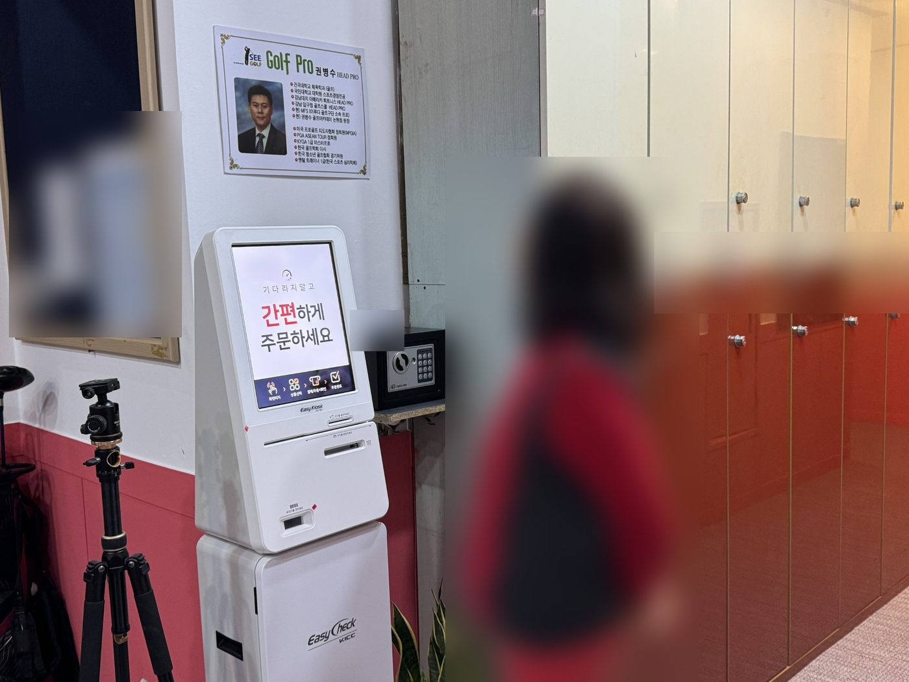
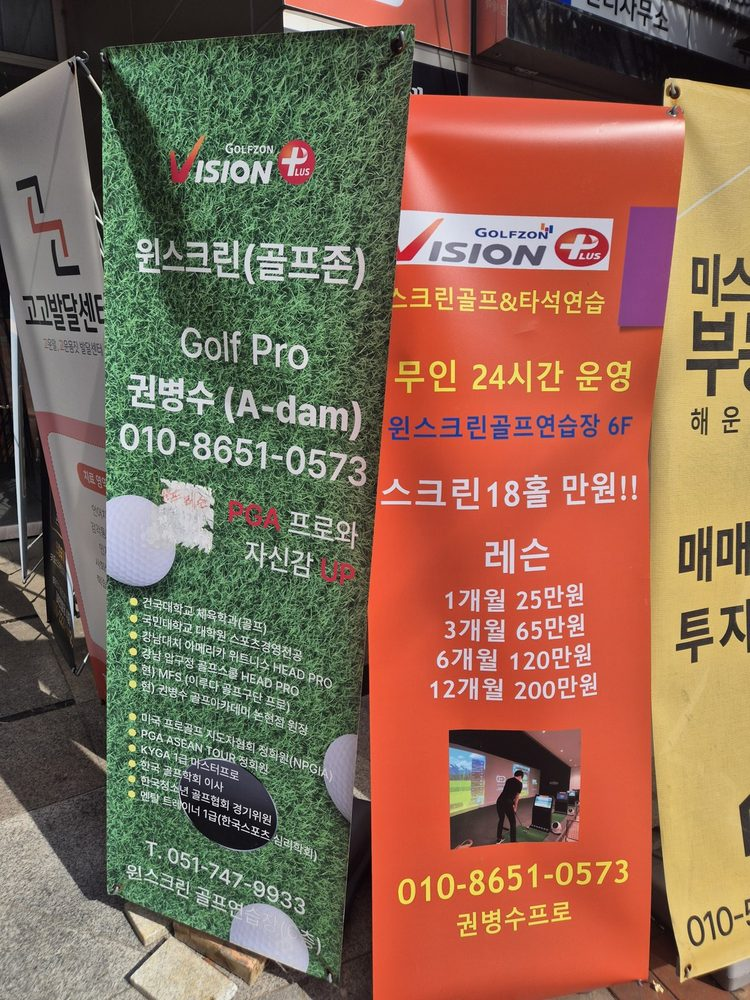
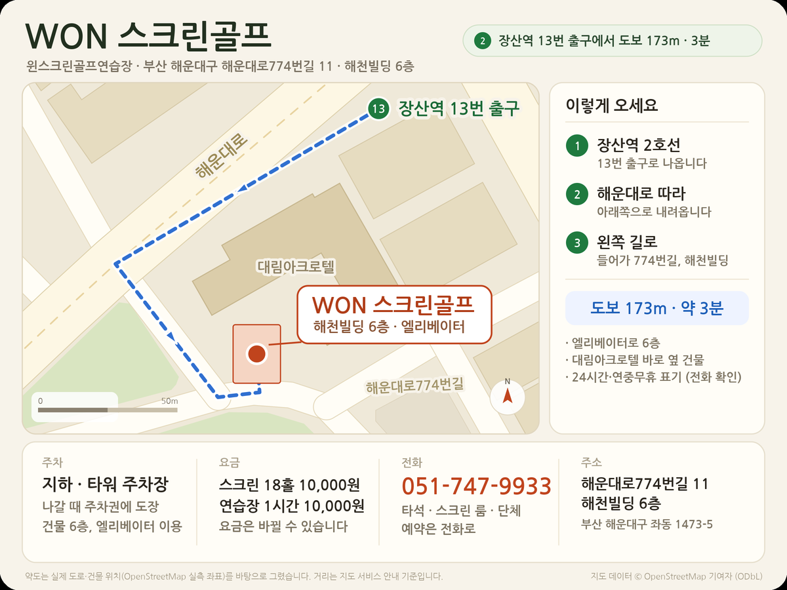

부산 해운대구 해운대로774번길 11, 해천빌딩 6층 · 장산역 쪽 좌동
부산 해운대구 좌동에 있는 스크린골프 연습장입니다. 건물에 걸린 간판은 WON 스크린골프, 등록된 상호는 윈스크린골프연습장입니다. 매장이 직접 찍어 올린 사진과 요금표를 함께 정리했습니다.
051-747-9933타석·스크린 룸·단체는 전화로 예약하시는 게 가장 빠릅니다.

타석, 스크린 룸, 단체 이용은 매장으로 전화해 예약하시는 게 가장 빠릅니다. 원하는 날짜와 시간, 인원을 말씀하시면 됩니다.
051-747-9933김캐디 앱에서 파는 1회 이용권(60분)은 앱으로 결제한 뒤 매장에서 쓰는 방식이라, 시간을 미리 잡아 두는 예약과는 다릅니다. 앱 이용권으로 가실 때는 도착 시간을 정하지 않고 가시면 되고, 저녁처럼 붐비는 시간에는 전화로 자리를 확인하고 출발하시면 됩니다.
QED 4타석과 일반 3타석입니다. QED는 초고속 카메라로 클럽과 공의 움직임을 찍어 스윙패스·페이스 각도 같은 데이터를 보여주고, 샷 뒤에 그 장면을 영상으로도 돌려주는 방식입니다. 공이 어디로 갔는지뿐 아니라 어떻게 맞았는지 보이니, 혼자 연습할 때 확인할 것이 늘어납니다.
타석 말고 스크린 룸도 4실 정도 있습니다. 룸에서 따로 치고 싶으시면 매장(051-747-9933)으로 전화해 자리와 이용 방법을 확인하시는 게 정확합니다.

연습타석 쪽입니다. 타석 앞에 스윙 궤도를 잡아 주는 둥근 링(스윙플레인)이 세워져 있어, 클럽이 어느 길로 지나가는지 눈으로 보면서 연습할 수 있습니다. 벽에는 매장에서 여는 스크린골프 대회 안내 배너가 걸려 있습니다.

대기 라운지에는 소파와 테이블, 정수기, 라면 자판기, 무한리필 커피가 있습니다. 창가 쪽에도 앉을 자리가 있어서, 치기 전에 라면을 먹거나 치고 나와 커피 한 잔 하는 동선이 됩니다.

플레이스에 적힌 편의 정보로는 예약, 단체 이용, 무선 인터넷, 남녀 화장실 구분, 대기공간, 주차가 있습니다. 휠체어 출입 가능 표기도 함께 올라와 있습니다. 예약은 위에 적은 대로 전화로 하시면 되고, 사람이 몰리는 저녁 시간대에는 출발 전에 전화로 자리를 확인하시면 됩니다.

네이버 지도 플레이스 가격표와 매장 1층에 걸린 배너에 적힌 요금입니다. 스크린 이용, 연습장 정기권, 프로 레슨은 서로 다른 상품이라 따로 적었습니다.
| 스크린·연습장 | |
|---|---|
| 스크린 18홀 (1인) | 10,000원 |
| 연습장 1시간 | 10,000원 |
| 연습장 정기권 | |
| 1개월 | 120,000원 |
| 3개월 | 330,000원 |
| 6개월 | 600,000원 |
| 프로 레슨 (타석 포함) | |
| 1개월 | 250,000원 |
| 3개월 | 650,000원 |
| 6개월 | 1,200,000원 |
| 12개월 | 2,000,000원 |
요금은 매장 사정에 따라 바뀔 수 있습니다. 기간권이나 레슨을 생각하고 계시면 방문 전에 051-747-9933으로 확인하세요.
김캐디 앱에서는 1회 이용권(60분)이 19크레딧으로 올라 있고, 첫 방문 20% 할인을 받으면 16크레딧입니다. 앱 이용권은 결제하고 매장에서 쓰는 방식이라 시간을 지정하는 예약은 되지 않습니다. 타석이나 룸을 미리 잡고 싶으시면 위 번호로 전화하시면 됩니다.


카카오맵 도보 길찾기 · 네이버 지도에서 보기 · 051-747-9933
지하철로 오시면 장산역 13번 출구에서 173m입니다. 큰길에서 대림아크로텔 옆 건물, 해천빌딩 6층입니다. 엘리베이터에서 내리면 바로 앞입니다.
건물 지하주차장과 타워주차장을 씁니다. 주차권을 가져가면 도장을 찍어 줍니다. 골프백을 싣고 오는 분들이 가장 먼저 확인하는 부분이라, 매장 안내에도 따로 적혀 있는 내용입니다.
네이버 지도 플레이스에는 24시간 영업 연중무휴로 적혀 있고, 김캐디 매장 정보에는 00:00~23:30으로 적혀 있습니다. 두 곳 표기가 다르니, 늦은 밤이나 이른 아침에 갈 때는 051-747-9933으로 먼저 물어보시는 게 확실합니다.
매장 게시판에 걸린 표찰과 1층 배너에 적힌 권병수 HEAD PRO의 경력입니다. 적힌 그대로 옮겼습니다.
레슨 요금은 위 요금표의 기간권 기준입니다. 레슨 일정과 예약은 매장으로 문의하시면 됩니다.
겨울 실내 연습, QED 타석 이야기, 처음 갈 때 확인할 것들을 따로 적어 두었습니다.